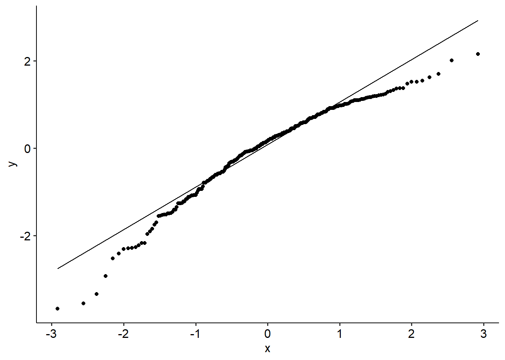
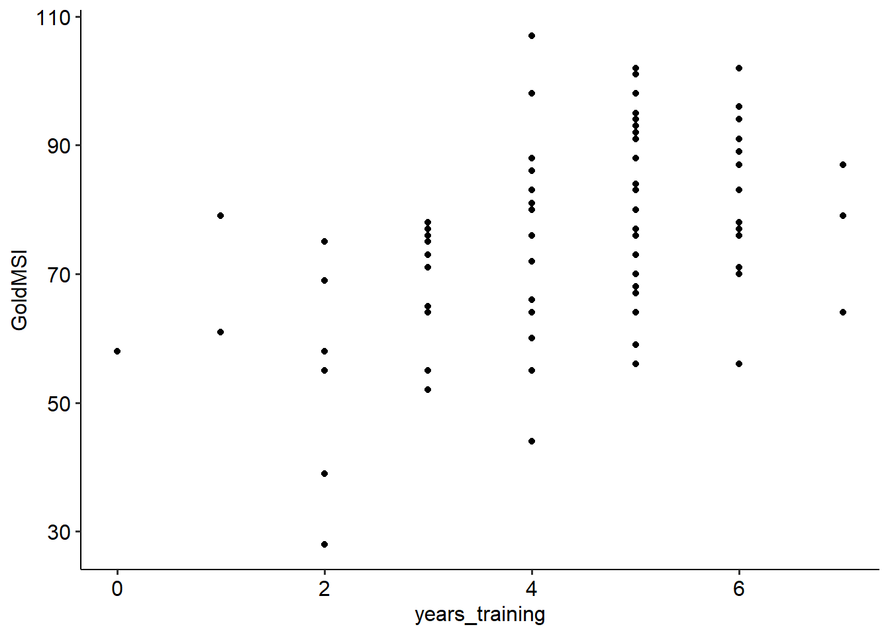
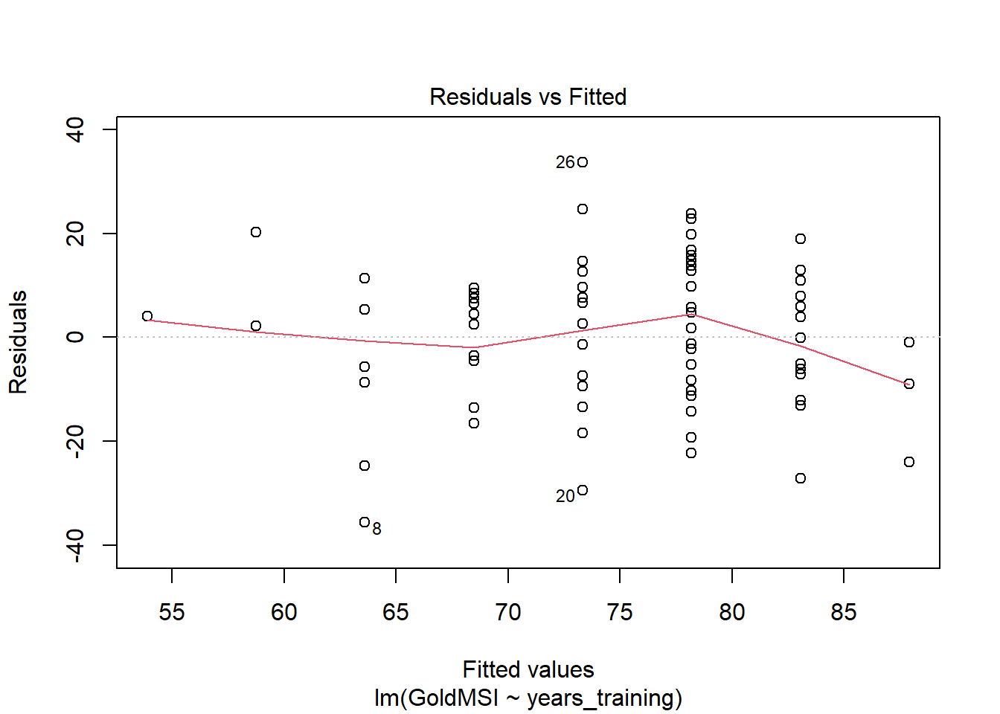
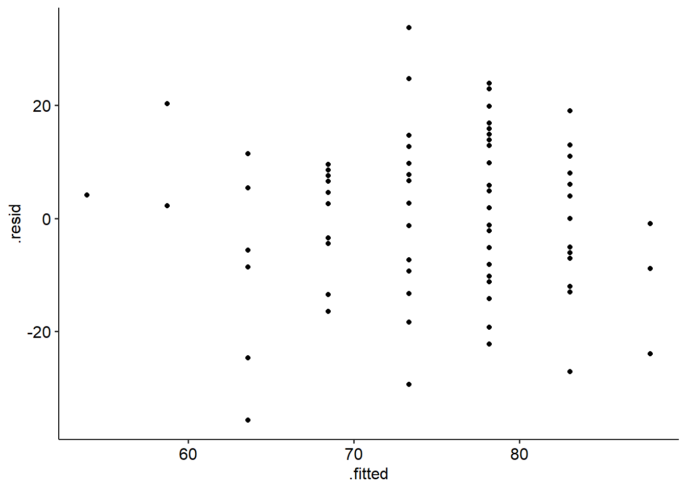

9.7 Three-way ANOVA
9.7.1 Introduction
Of course, we don’t have to stop at two IVs. Sometimes we may have designs where we want to
At this point though, I want to ask you… why are you going to that complex of a design?
To illustrate, consider a three-way ANOVA with variables A, B and C. In line with the principle of marginality, an ANOVA with all possible interactions will have:
- 3 main effects: A, B and C
- 3 simple (two-way) interaction effects: AxB, AxC, BxC
- 1 three-way interaction: AxBxC
This is not a trivial thing to interpret! A significant three-way interaction means that e.g. the main effect of variable A depends on both variable B and variable C. This quickly becomes really difficult to interpret, particularly when one or more variables have multiple levels. What is the effect of A when B = 2 and C = 4, for instance? What about A when B = 2 and C = 3? etc etc.
Nevertheless, three-way ANOVAs (and even beyond that) are not necessarily uncommon, so it doesn’t hurt to know about them. We’ll unpack the main concepts as we step through an example, for the sake of brevity.
9.7.2 Example
This dataset is from a fictional experiment looking at how gender (male and female), risk of migraine (low or high) and different treatments (labelled X, Y and Z) impacted pain scores associated with a migraine headache. Below is a snippet of what our data looks like:
We want to run a gender (2) x risk (2) x treatment (3) three-way ANOVA to see whether these predictors have an effect on overall pain scores.
Let’s start by visualising this data. We cannot fully visualise a three-way interaction because we inherently need four dimensions (as we have three predictors and one outcome variable). The best way to approach this is to draw a series of two-way interaction plots, split by the third variable. In the example below, the graphs show treatment on the x-axis, pain scores on the y-axis, different lines for low and high risk and separate graphs for male and female participants:
headache %>%
group_by(gender, risk, treatment) %>%
summarise(
mean_pain = mean(pain_score),
sd_score = sd(pain_score)
) %>%
ggplot(
aes(x = treatment, y = mean_pain, colour = risk, group = risk)
) +
geom_point(size = 2) +
geom_line(size = 1) +
facet_wrap(~c(gender)) +
theme_pubr()## `summarise()` has grouped output by 'gender', 'risk'. You can override using the `.groups` argument.
9.7.3 Simple simple effects
Consider a scenario where a three-way interaction is significant. Naturally, as we saw in the examples with two-way ANOVAs, we now have to turn to breaking down the lower-order terms to unpack this interaction.
For a two-way ANOVA, this was easy - we simply interpreted the effect of variable A at each level of variable B, and vice versa. We called this a simple effects test. But now, we need to break down a three-way interaction by looking at every two-way interaction that is now significant. The ‘simple effect’ is now each two-way interaction, hence why the terminology of simple interaction effect/test is sometimes used.
That, of course, means that if the two-way is significant, we need to run the next level of simple effects for each main effect. At this level, we call them simple simple main effects. That’s because we’re now looking at main effects that are simple effects of a simple interaction effect, which is itself a simple effect of a three-way interaction. If that didn’t make sense, consider running an alternate analysis to a three-way ANOVA.
It helps to visualise this, so I’ll use the headache data to do so. Imagine that the three-way interaction between treatment, risk and gender is significant. Imagine that every other effect is also significant (we’ll test this further down). This would give us three sets of simple interactions to test:
- Treatment x risk, for each gender
- Treatment x gender, for each risk level
- Gender x risk, for each treatment
Here is the first interaction visualised - treatment and risk, with separate plots for males and females:
headache_summary <- headache %>%
group_by(gender, risk, treatment) %>%
summarise(
mean_pain = mean(pain_score),
sd_score = sd(pain_score)
) ## `summarise()` has grouped output by 'gender', 'risk'. You can override using the `.groups` argument.headache_summary %>%
ggplot(
aes(x = treatment, y = mean_pain, colour = risk, group = risk)
) +
geom_point(size = 2) +
geom_line(linewidth = 1) +
facet_wrap(~c(gender)) +
theme_pubr()
Here’s the second, which plots treatment x gender for each risk level:
headache_summary %>%
ggplot(
aes(x = treatment, y = mean_pain, colour = gender, group = gender)
) +
geom_point(size = 2) +
geom_line(linewidth = 1) +
facet_wrap(~c(risk)) +
theme_pubr()
And finally, here is gender and risk by each treatment:
headache_summary %>%
ggplot(
aes(x = risk, y = mean_pain, colour = gender, group = gender)
) +
geom_point(size = 2) +
geom_line(linewidth = 1) +
facet_wrap(~c(treatment)) +
theme_pubr()
And then within that, you would also want the main effects.
9.7.4 Assumptions and output
Let’s run our basic ANOVA. Just like in Jamovi, we’ll do our usual assumption checks for our ANOVA model too. Based on Levene’s test and the Shapiro-Wilks test, we have no violations in multivariate equality of variance (p = .994) or normality (p = .398).
threeway_aov <- aov_ez(
data = headache,
id = "id",
dv = "pain_score",
between = c("gender", "risk", "treatment"),
anova_table = list(es = "pes"),
include_aov = TRUE
)## Contrasts set to contr.sum for the following variables: gender, risk, treatment##
## Shapiro-Wilk normality test
##
## data: threeway_aov$aov$residuals
## W = 0.98212, p-value = 0.3981## Anova Table (Type 3 tests)
##
## Response: pain_score
## Effect df MSE F pes p.value
## 1 gender 1, 60 19.35 16.20 *** .213 <.001
## 2 risk 1, 60 19.35 92.70 *** .607 <.001
## 3 treatment 2, 60 19.35 7.32 ** .196 .001
## 4 gender:risk 1, 60 19.35 0.14 .002 .708
## 5 gender:treatment 2, 60 19.35 3.34 * .100 .042
## 6 risk:treatment 2, 60 19.35 0.71 .023 .494
## 7 gender:risk:treatment 2, 60 19.35 7.41 ** .198 .001
## ---
## Signif. codes: 0 '***' 0.001 '**' 0.01 '*' 0.05 '+' 0.1 ' ' 1So what do our results tell us? Well:
We have significant main effects of gender (F(1, 60) = 16.20, p < .001), risk group (F(1, 60) = 92.69, p < .001) and treatment (F(2, 60) = 7.32, p = .001).
We have a significant two-way gender x treatment interaction (F(2, 60) = 3.34, p = .04), but no significant interactions between gender x risk (p = .708) and risk x treatment (p = .494).
Our highest-order interaction, gender x risk x treatment is significant (F(2, 60) = 7.41, p = .001).
Great, so we know that we’re dealing with a three-way interaction. But… how do we break that down? As in a two-way, we now need to break down simple main effects and simple interaction effects.
In a two-way ANOVA, we broke down the two-way interaction by essentially running tests on the main effects (hence, simple main effects). In a three-way ANOVA, we attempt to start by testing for interactions between A and B, at each level of C. Think of it like running multiple two-way ANOVAs.
In our case, let’s look at whether risk and treatment interact, for men and women separately. For simplicity, I’m defaulting to using rstatix’s anova_test() here, but an alternative approach is to filer the data by men and women and use these smaller datasets as calls to aov_ez.
Here, the risk x treatment interaction is significant for men (p = .016). However, for women the interaction is not quite significant (p = .054).
Let’s break this down for the men by doing simple simple effects. Following the principle of starting with the highest-order factor first, we now need to decompose the two-way risk x treatment interaction for men. Is there a difference between treatments when risk is low?
Here’s a graph to visualise what comparisons we’re looking at:
Here’s one way to run the simple simple effets of treatment (with Holm adjustments by default):
headache %>%
filter(gender == "male") %>%
group_by(risk) %>%
pairwise_t_test(pain_score ~ treatment, detailed = TRUE) From this we can infer the following: - For high risk men, there was a significant difference in treatment between X and Y (p = .004), a significant difference between X and Z (p = .001) but no difference between X and Z (p = .347) - No significant difference between treatments for low risk men
And here are the simple simple effects for risk in men:
This tells us that: - For treatment X there was a significant difference in pain scores between high and low risk (p < .001) - Same for treatment Y - a significant difference between high and low risk in pain (p = .009) - No significant difference between high and low risk for treatment Z (p = .071).